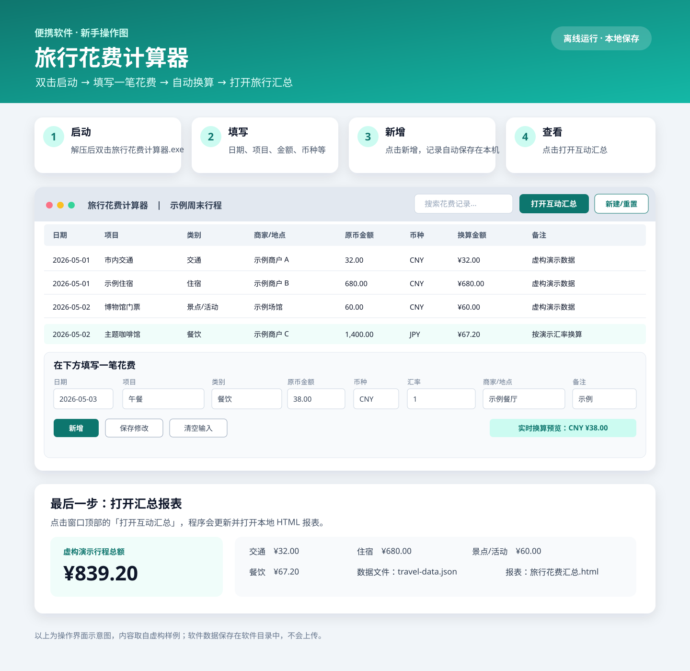

先看完整操作图

1. 启动软件
下载并解压便携 ZIP，双击 旅行花费计算器.exe。初次体验可以直接使用 ZIP 中的虚构样例；若要记录自己的行程，点击窗口上方的「新建/重置旅行」。
2. 录入一笔花费
- 在窗口下方选择日期、类别和币种。
- 填写项目、原币金额、商家/地点和备注。
- 外币账目填写汇率，含义是「1 单位原币折合多少基准币」。金额换算会即时预览。
- 点击「新增」。记录会自动保存在软件目录，不用另点保存文件。
3. 修改或查看汇总
点击上方表格的一条记录可载入编辑区；修改后点「保存修改」。点「打开互动汇总」会更新并打开离线报表，可按类别查看金额。
图中的行程、商家和金额均为虚构数据。个人数据仅保存在本地软件目录。